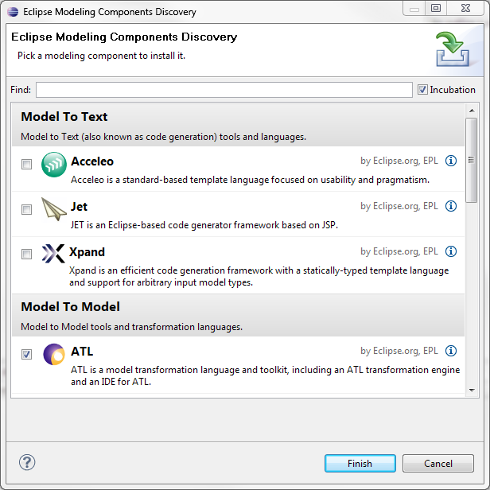
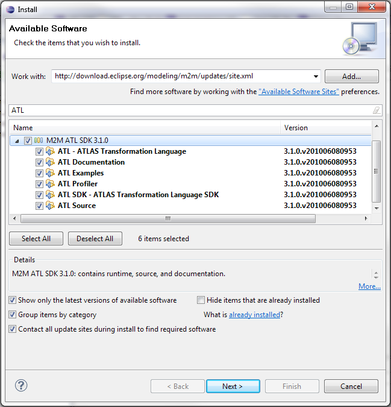

ATL can be downloaded and installed in a number of ways. If you have an existing Eclipse installation and simply wish to install ATL in it, Installing through the update site is the easiest way. If you'd rather install a new Eclipse with ATL, you may want to take a look at the facilities provided by the amalgamation project.
For those of you that need to retrieve the zips of ATL, you can either look at the latest releases.
Note that whatever the installation procedure you choose, examples are available from the menu right-click => New => Examples => ATL.
Install with the Amalgamation project
- Download the latest EPP modeling bundle
-
Use the modeling discovery button to install ATL

Install with the update site
The easiest (and quickest) way of installing ATL is to use the Helios update-site.
- Install your preferred Eclipse distribution from the Eclipse download page.
-
Go to Help => Install New Software...

-
In the upper part, click Add and type in the location
http://download.eclipse.org/mmt/atl/updates/releases/3.3 -
Select this new update site in the combo box and tick ATL in the lower
panel, such as shown below.
 - Click Finish, read and accept the Eclipse Public License, and watch ATL install itself along with its dependencies.
Download the latest ATL
The latest versions of ATL are the 3.x stream builds. Check them out on the project's download page.
Download old releases of ATL
Old ATL build (namely ATL 2.0RC2) still available on the old versions download page.